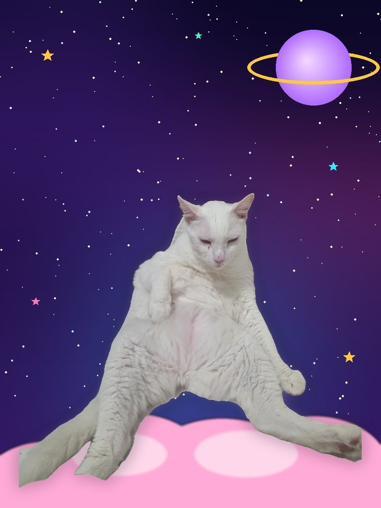
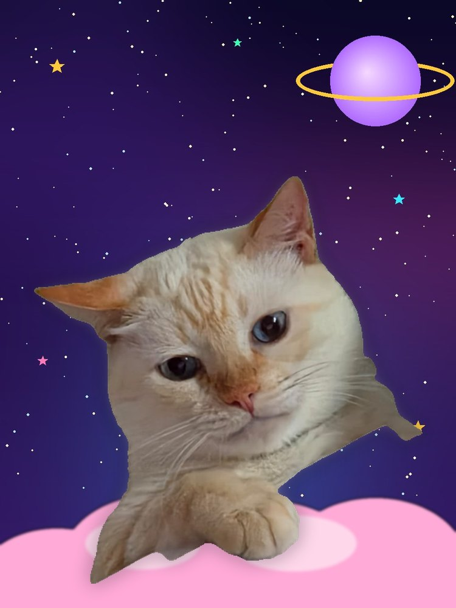
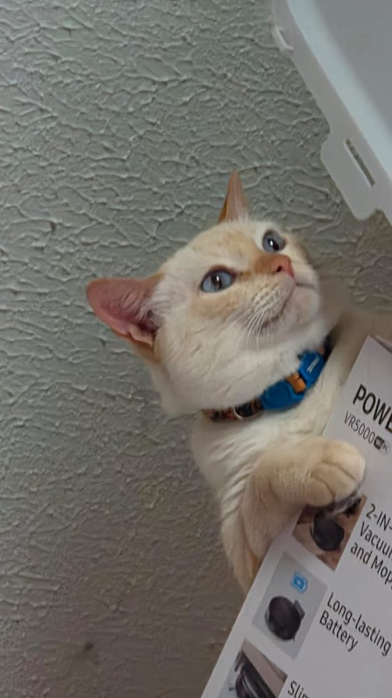

Gabin galaksi
Seis jogos feitos com carinho pela Madrinha Ana. Escolha um planeta para começar.Kuusi peliä, jotka kummitäti Ana teki rakkaudella. Valitse planeetta ja aloita!
🎂 Hoje é aniversário da Madrinha Ana e Dia das Crianças!Tänään on kummitäti Anan syntymäpäivä ja lasten päivä!


